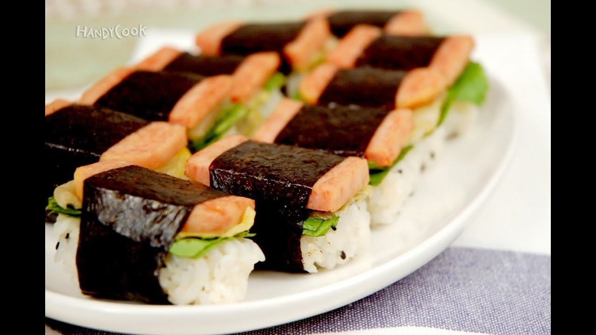
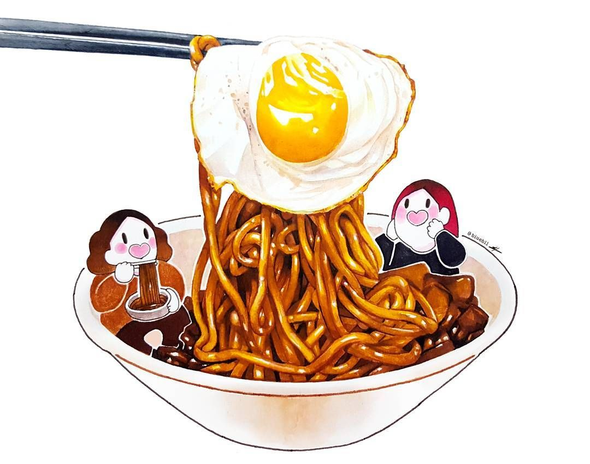
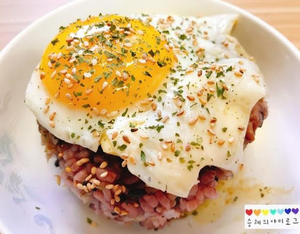

매콤 달콤 떡볶이
준비물
떡 200g, 양파1/2, 대파 약간, 고추장 반 큰술, 고춧가루1/3큰술, 물500cc, 다시다 작은 술, 설탕5스푼, 우유 or 생크림 약간(선택)
232Kcal(1인분 기준)
- 떡은 15분 간 물에 담궈 불려준다.
- 기름을 두른 후라이팬에 양파와 대파 고춧가루를 넣고 볶아준다.
- 설탕과 다시다 고추장과 물을 넣고 7분간 끓여준다.
- 물에 불려준 떡을 넣고 5분간 더 끓여준다.
- 간을 보고 설탕이나 고춧가루를 첨가해준다.
요리 순서

스팸 주먹밥
준비물
스팸1/2, 김4장, 밥, 설탕, 참기름, 김치
112Kcal(1인분 기준)
- 스팸은 얇게(약3mm) 썰어주고, 김치는 본인의 기호에 맞게 썰어준다.
- 후라이팬에 김치와 참기름(1T) 설탕을 넣고 1분간 살짝 볶아준다.
- 밥은 소금으로 밑간을 한 후 한입 크기로 뭉쳐준다.
- 스팸을 노릇하게 구워 밥위에 올려준다.
- 그 위에 김치를 올리고 미리 준비해둔 김을 감싸준다.
- 추가적으로 본인이 넣고 싶은 재료가 있으면 자유롭게 추가해도 된다.
요리 순서

참치 김치 볶음밥
준비물
참치 반캔, 김치1/2컵, 고추장, 간장, 밥, 달걀, 설탕
167Kcal(1인분 기준)
- 고추장과 설탕 간장을 섞어 양념장을 만들어준다.
- 김치를 먹기좋게 썰어주고 후라팬에 참치와 함께 볶아준다.
- 약3분 간 볶아주고 밥을 넣어 볶는다.
- 양념장을 넣어 간을 봐주고 마지막으로 계란 후라이를 위에 올려주면 완성!
요리 순서

짜파구리
준비물
짜파게티, 너구리
367Kcal(2인분 기준)
- 끓는 물에 너구리 라면 스프를 넣어준다.
- 끓는 물에 면을 넣고 면이 어느정도 익으면 짜파게티 스프를 넣어준다
- 2분 정도 끓여준 뒤 전자렌지 2분 동안 돌려준다.
- 소스를 잘 버무려 주면 마무리!
요리 순서

간장 계란밥
준비물
양파1/2, 간장5스푼, 밥, 계란2개, 김 or 김가루, 참기름
135Kcal(1인분 기준)
- 양파를 먹기 좋게 썰어주어 후라이팬에 살짝 볶아준다.
- 계란 후라이를 2개 준비한다.(반숙은 자유)
- 따끈한 밥에 계란 후라이와 볶은 양파를 올려주고 간장을 넣어 간을 봐준다.
- 김가루를 올려주고 참기름을 첨가하면 끝!
요리 순서

간단 오징어 덮밥
준비물
양파, 대파, 오징어, 참기름, 통깨, 밥, 설탕, 고춧가루, 물, 맛술, 간장, 다진마늘
274Kcal(1인분 기준)
- 설탕(0.5)큰술 + 고춧가루(1)큰술 + 물 1컵 + 맛술(2T) + 간장(4)큰술 + 다진마늘(5알 분량) 을 섞어 양념장을 만들어준다.
- 파와 양파를 썰고 오징어는 먹기 좋게 썰어준다.
- 양파를 2분간 볶아주고 오징어를 넣어 같이 익혀준다.
- 양념장을 넣고 간을 봐주며 졸여준다.
- 마지막으로 참기름 통깨 대파를 넣고 살짝 볶아 밥 위에 올려주면 끝!
요리 순서

돼지고기 김치찌개
준비물
대파 김치국물 돼지목살 두부 김치(종이컵 2컵) 참기름 고춧가루 다진마늘
182Kcal(1인분 기준)
- 대파와 두부를 썬다.
- 김치와 목살을 한입 크기로 잘라준다.
- 냄비에 참기름을 둘르고 목살을 센 불에 볶는다.
- 고기가 어느정도 익으면 김치를 넣고 중간 불로 3분 가량 볶아준다.
- 물과 김치국물을 넣고 중약불로 10분간 더 끓여준다.
- 두부와 다진마늘 파를 넣고 3분간 더 끓여준다.
요리 순서